Practice Log n Share
سبتمبر 2026
نظرة عامة
تسجيل التمرين بلمسة واحدة، ثم عرض الشاشة نفسها على المعلّم أثناء الدرس. خططت لهذا التطبيق على iPhone وصمّمته من أجل تماريني على الساكسفون، ونفّذته بالتعاون مع الذكاء الاصطناعي.


- دوري
- التخطيط وتصميم UX/UI والتنفيذ (بالتعاون مع Claude Code وCodex)
- الفترة
- سبتمبر 2026
- التقنيات
- React · TypeScript; Swift (WKWebView, Live Activity, StoreKit, iCloud)
جرّب النسخة التجريبية على الويب (تتضمن سجلات تماريني حتى 20 سبتمبر 2026)
البداية — «كيف تسير تمارينك؟»: لم أجد جوابًا
في دروسي التي تُعقد كل أسبوعين، لم تكن إجابة «تمرّنت على السلالم الموسيقية أكثر» توضّح ما تمرّنت عليه أو مدته. كان من الصعب الكتابة في دفتر ورقي والساكسفون معلّق حول عنقي، وكانت تطبيقات تتبّع الوقت التي جرّبتها أدوات لمراجعة سجلاتي بمفردي.

التسجيل — والآلة في يدي، بلمسة واحدة
أثناء التمرين لا ألمس إلا بطاقات الفئات. تبدأ اللمسة قياس الوقت، وتبدّل بطاقة أخرى الفئة، وتوقفه لمسة ثانية على البطاقة نفسها.
- 1 السجل
- التمارين السابقة. أول ما يظهر عند فتح التطبيق.
- 2 اليوم
- ترتيب التمرين وتوزيعه. يمتلئ بعد ساعة.
- 3 قيد القياس
- هذه البطاقة وحدها ساطعة ومحاطة بالأبيض.
- 4 البطاقات
- المس للتبديل. وقت اليوم بحجم بارز.
يوم واحد — حين يمتلئ الشريط، يبقى ممتلئًا
يمتلئ شريط اليوم عند بلوغ ساعة. بعدها يصبح المجموع الحالي هو الطرف الأيمن، كي لا يعود الفراغ إلى شريط سبق أن امتلأ.
تمرين اليوم — 1 س 05 د
المعتمد
المستبعد
التراكم — كل شيء ظاهر، منذ اليوم الأول
تبيّن درجات الأخضر مقدار التمرين، وتحدّد الإطارات الحمراء أيام الدروس. يتيح التمرير الأفقي العودة إلى أول يوم مسجّل. أعطيت الأولوية لاستعراض سنوات من التمرين على خفة عرض البيانات.

المشاركة — في بداية الدرس، شاشة تُفهم بنظرة
تُلخّص المجاميع حسب الفئة والتفاصيل اليومية الفترة من الدرس السابق إلى اليوم، لتُعرض مباشرة على المعلّم. وضعت جميع الفئات في شاشة واحدة داخل الجدول اليومي، حتى لو استلزم ذلك تصغير النص، وألغيت التمرير الأفقي.

التطور — البطاقات تصبح لوحة تحكّم للتمرين
بنيت الشاشات انطلاقًا من مواصفات صغتها بالحوار مع الذكاء الاصطناعي، وكرّرت تجربتها وتعديلها بنفسي. استكشفت التسجيل والمشاركة في نسخة ويب مبكرة، ثم نفّذت تطبيقًا للاستخدام على iPhone.

9 سبتمبر
النسخة الأولى

21 سبتمبر
نسخة الويب
24 سبتمبر
iOS 1.0
- الاسم والوقت معًا
- أبرزت وقت اليوم على كل بطاقة، لربط ما تمرّنت عليه بالوقت الذي خصّصته له.
- الحالة الحالية بنظرة واحدة
- جعلت البطاقة الجاري قياسها وحدها ساطعة، وخفّفت سطوع البقية.
- نطاق التحكّم داخل الشاشة
- جعلت التمرير يتوقف حيث يظهر صف البطاقات كاملًا داخل الشاشة.
في المرحلة الأخيرة كرّرت دورة نحو 15 مرة: يقترح Claude Code مشكلات محتملة، ويتحقق Codex منها ويصلحها، وأقرّر أنا ما أعتمده من التغييرات.
الإحساس — اختيار طريقة التوقف بالتجربة
لم تكفِ التعليمات اللفظية لتحقيق إحساس «حركة سلسة ثم توقف محكم». أنشأت مع الذكاء الاصطناعي أداة لتبديل الأساليب والقيم فورًا، وقارنت خمسة أساليب على جهاز فعلي، ثم اخترت تثبيت التمرير الأصلي في المتصفح.
نموذج الحدبة

توقّع نقطة الوصول

الأصلي proximity
المعتمد

الأصلي mandatory

دون تثبيت


بوصفه منتجًا — ما وراء التمرين
يتبع المظهر إعدادات الجهاز. تُحفظ سجلات التمرين على الجهاز وتُنسخ احتياطيًا إلى iCloud تلقائيًا.

عند الاستخدام — السؤال التالي: ما مقدار التفاصيل التي نسجّلها؟
استخدمت التطبيق في تماريني الصباحية، وعرضت الشاشة على معلّمي أثناء الدرس. كان رأيه أن محتوى التمرين واضح من نظرة واحدة، وأن تسجيل أنواع السلالم الموسيقية سيجعله أكثر فائدة (إعادة صياغة). أدرس إضافة مستوى تحت الفئات لتسجيل تفاصيل أكثر مع الحفاظ على سهولة الاستخدام.
المواد
النسخة التجريبية على الويب تتيح تجربة التسجيل والمشاركة. تتضمن سجلات تماريني حتى 20 سبتمبر 2026، وتُحفظ التغييرات في المتصفح الذي تستخدمه فقط.